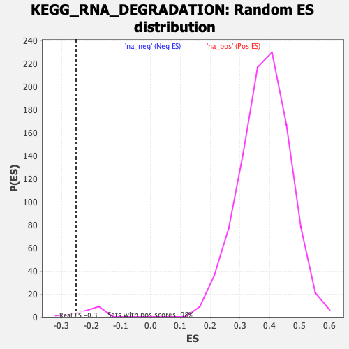

| | | Dataset | DGErankName |
| Phenotype | NoPhenotypeAvailable |
| Upregulated in class | na_neg |
| GeneSet | KEGG_RNA_DEGRADATION |
| Enrichment Score (ES) | -0.2506579 |
| Normalized Enrichment Score (NES) | -1.1948638 |
| Nominal p-value | 0.1764706 |
| FDR q-value | 0.25481588 |
| FWER p-Value | 0.615 |
Table: GSEA Results Summary
 Fig 1: Enrichment plot: KEGG_RNA_DEGRADATION
Fig 1: Enrichment plot: KEGG_RNA_DEGRADATION
Profile of the Running ES Score & Positions of GeneSet Members on the Rank Ordered List
| SYMBOL | RANK IN GENE LIST | RANK METRIC SCORE | RUNNING ES | CORE ENRICHMENT | | 1 | CNOT8 | 1734 | 1.438 | -0.0569 | No |
| 2 | C1D | 2034 | 1.314 | -0.0245 | No |
| 3 | EXOSC2 | 2670 | 1.110 | -0.0222 | No |
| 4 | HSPD1 | 3460 | 0.898 | -0.0385 | No |
| 5 | CNOT6L | 3640 | 0.854 | -0.0165 | No |
| 6 | PATL1 | 3663 | 0.849 | 0.0157 | No |
| 7 | XRN2 | 3700 | 0.840 | 0.0465 | No |
| 8 | MPHOSPH6 | 3874 | 0.804 | 0.0670 | No |
| 9 | PARN | 4116 | 0.745 | 0.0807 | No |
| 10 | LSM6 | 4169 | 0.733 | 0.1063 | No |
| 11 | ZCCHC7 | 4389 | 0.685 | 0.1190 | No |
| 12 | PAPOLG | 4919 | 0.569 | 0.1068 | No |
| 13 | DDX6 | 5246 | 0.491 | 0.1049 | No |
| 14 | DCP2 | 5253 | 0.489 | 0.1238 | No |
| 15 | TENT4A | 5907 | 0.358 | 0.0952 | No |
| 16 | EXOSC7 | 6019 | 0.334 | 0.1011 | No |
| 17 | ENO1 | 6181 | 0.299 | 0.1023 | No |
| 18 | PNPT1 | 6461 | 0.244 | 0.0937 | No |
| 19 | XRN1 | 6688 | 0.207 | 0.0870 | No |
| 20 | DCP1A | 6769 | 0.197 | 0.0896 | No |
| 21 | LSM1 | 6889 | 0.177 | 0.0888 | No |
| 22 | LSM3 | 6927 | 0.170 | 0.0930 | No |
| 23 | LSM5 | 7117 | 0.133 | 0.0859 | No |
| 24 | CNOT7 | 7242 | 0.116 | 0.0824 | No |
| 25 | EXOSC6 | 7272 | 0.112 | 0.0849 | No |
| 26 | HSPA9 | 7300 | 0.108 | 0.0874 | No |
| 27 | LSM4 | 7491 | 0.081 | 0.0781 | No |
| 28 | DIS3 | 7690 | 0.054 | 0.0673 | No |
| 29 | LSM8 | 7855 | 0.032 | 0.0578 | No |
| 30 | CNOT6 | 7942 | 0.022 | 0.0530 | No |
| 31 | MTREX | 8009 | 0.014 | 0.0492 | No |
| 32 | ENO2 | 8256 | -0.014 | 0.0337 | No |
| 33 | EXOSC3 | 8767 | -0.070 | 0.0030 | No |
| 34 | PAPOLA | 8849 | -0.080 | 0.0009 | No |
| 35 | EXOSC1 | 8897 | -0.086 | 0.0012 | No |
| 36 | CNOT2 | 9258 | -0.122 | -0.0176 | No |
| 37 | CNOT1 | 10258 | -0.203 | -0.0751 | No |
| 38 | LSM2 | 10395 | -0.214 | -0.0755 | No |
| 39 | EDC3 | 11473 | -0.295 | -0.1345 | No |
| 40 | PAPOLB | 11687 | -0.313 | -0.1361 | No |
| 41 | CNOT10 | 11854 | -0.327 | -0.1341 | No |
| 42 | LSM7 | 12238 | -0.364 | -0.1448 | No |
| 43 | EXOSC4 | 13853 | -0.572 | -0.2280 | Yes |
| 44 | EXOSC8 | 13918 | -0.583 | -0.2092 | Yes |
| 45 | CNOT9 | 13972 | -0.595 | -0.1891 | Yes |
| 46 | EXOSC9 | 13984 | -0.599 | -0.1661 | Yes |
| 47 | DCP1B | 14381 | -0.690 | -0.1648 | Yes |
| 48 | ENO3 | 14429 | -0.704 | -0.1400 | Yes |
| 49 | EXOSC5 | 14453 | -0.713 | -0.1133 | Yes |
| 50 | DCPS | 14482 | -0.724 | -0.0865 | Yes |
| 51 | CNOT4 | 14560 | -0.757 | -0.0616 | Yes |
| 52 | EDC4 | 14616 | -0.777 | -0.0345 | Yes |
| 53 | CNOT3 | 14805 | -0.864 | -0.0127 | Yes |
| 54 | EXOSC10 | 15113 | -1.133 | 0.0120 | Yes |
Table: GSEA details [plain text format]

Fig 2: KEGG_RNA_DEGRADATION: Random ES distribution
Gene set null distribution of ES for KEGG_RNA_DEGRADATION